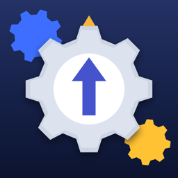

Twistgear
Puzzle d'engrenages pour iPhone
Comment jouer
Touche un engrenage : il fait un quart de tour, et ses voisins tournent dans l'autre sens. Trouve le bon enchaînement pour que chaque flèche pointe vers son repère jaune. Moins tu utilises de coups, plus tu gagnes d'étoiles.
Questions fréquentes
Je suis bloqué sur un niveau
Touche le bouton Indice (l'ampoule) : un engrenage qui doit encore tourner se met à vibrer. Tu peux aussi Annuler tes derniers coups ou Recommencer le niveau.
Que font les engrenages spéciaux ?
Le verrouillé (cadenas) ne tourne que si tu le touches. Le petit fait un demi-tour quand un voisin tourne. L'inversé (orange) tourne dans le même sens que son voisin.
Qu'est-ce qu'un défi ?
Tous les 5 niveaux, un défi limite ton nombre de coups. Si tu dépasses, tu recommences le niveau.
Ma progression a disparu
Ta progression est enregistrée uniquement sur ton iPhone. Elle est effacée si tu supprimes l'app, ou si tu utilises « Effacer la progression » dans les réglages du jeu.
Comment couper le son ou les vibrations ?
Depuis l'accueil ou le menu pause, ouvre Réglages : tu peux y couper le son, les vibrations et passer en mode clair ou sombre.
Nous contacter
Un problème, une idée, un niveau trop difficile ? Écris-nous, nous répondons dès que possible.
Envoyer un messageSi tu testes le jeu avec TestFlight, tu peux aussi faire une capture d'écran dans le jeu : TestFlight te propose de l'envoyer avec un commentaire.